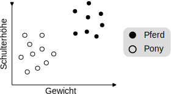
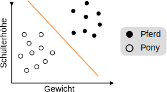
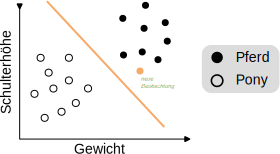
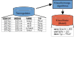
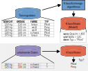

Vorlesung 1: überwachtes Lernen (supervised learning)


Überwachtes Lernen:
Klassifizierung
Klassifizierung
- Eine Anzahl von Beobachtungen mit Attributen und ihren
Werten (x1, ..., xd). - Zu jeder Beobachtung eine Klasse (label) y ∈ {y1, ..., yk}.
Ziel: Finde die korrekte Klasse für eine neue Beobachtung ohne Klasse.
→ Klassifizierung
Beispiel
Beobachtungen von Huftieren
y1: Pferd ----------- y2: Pony
{kind=link}
Beobachtung: Tier das 520 kg schwer und 148 cm groß ist.
→ Pferd
Überwachtes Lernen: Klassifizierung
Finde eine Gerade, die Pferde und Ponys optimal voneinander trennt.



Klassifizierungs-"Pipeline"
Trainingsphase
Anwendungsphase


Zusammenfassung
- Beim überwachten Lernen versuchen wir, bekannte Muster zu erlernen und automatisiert wiederzuerkennen.
- Überwachtes Lernen besteht aus einer Traininsphase und einer Anwendungsphase.
- Mit überwachtem Lernen können wir eine Klassenzugehörigkeit vorhersagen (Klassifizierung).
- Überwachtes Lernen erlaubt es auch, kontinuierliche Werte vorherzusagen (Regression) → mehr in der nächsten Vorlesung.
Aufgabe (5 min)
- Überlegn Sie sich einen Anwendungsfall für überwachtes Lernen aus ihrem Alltag, z.B. aus Studium, Beruf, oder Privatleben.
- Für den gegebenen Anwendungsfall überlegen Sie sich:
- Was ist eine einzelne Beobachtung?
- Was sind die Attribute bzw. Merkmale der Beobachtung?
- Was sind die Klassen bzw. Zielwerte, die Sie vorhersagen möchten?